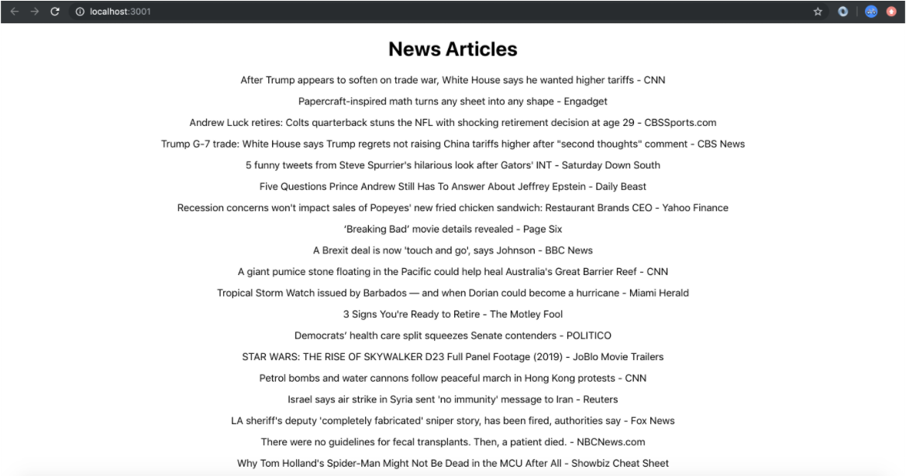

Redux Thunk
Light tomorrow with today. —Elizabeth Barrett Browning
Review and Recap
After last week, you should have a fair grasp over Redux and its few functions that make all the magic of global app state happen. This, of course, allows us to view and mutate a global state from any component we so choose. We've also learned about actions, or action creators, and reducers and how they interact with each other. Our action creators so far have been fairly simple, but what if they need to be more complex in that they could make a fetch to a remote api, wait for the response, set the state to fetching: true while doing it, then set the state to fetching: false, success: true and set the state with the data it returned? In other words, what if they needed to be asynchronous? Enter Redux Thunk.
Overview
Why are we using Thunk? As we mentioned briefly above, our action creators currently don't support asynchronous actions (they can make a request to an API, wait for a response, then do things during and after the response does come in). What's asynchronous mean again? It means a function that doesn't have a determinate and sequential runtime. It may go out and call an API or make a connection with a database and while those functions are waiting to resolve it can move ahead and load up the screen with other functionality. These types of functions need to be handled differently from normal functions in JavaScript and so far haven't built an action creator that can handle these callbacks or promises (Remember, we've used these fetch and axios in 211 to do async calls). We are going to do the same thing inside our action creators, but in order for Redux to understand these async function we need to add the thunk middleware.
What is Thunk?
Thunk is middleware that allows action creators to return a Function instead of an Object.
What is Middleware?
Middleware is a function (or multiple functions) that you want to run every time a certain action happens. We've seen middleware in the last course (JS311) to handle authentication workflows in Express. Thunk works in the same way except that it happens when we call our action creators.
Examples
Let's get into some examples. First, let's talk about how we set up Thunk. It's incredibly easy. All you do is import thunk from "redux-thunk". Since this is another package you may have also guessed that we need to install "redux-thunk" into our application with the following command: npm i redux-thunk.
To use redux-thunk we also need to import the applyMiddleware tool from Redux so we can tie the thunk into the createStore function call. All of this happens in the store.js file. Here's what it looks like:
1 2 3 4 5 6 7 8 9 | |
As we can see, there are only three small changes between this store.js file and the one we used last class. They involve the introduction of applyMiddleware, thunk and the application of thunk as the third parameter in createStore(), applyMiddleware(thunk).
Ok that's it, we are set up to use Thunk. So now how do we use it? Well . . . we need create a new property on state, a new action, and a new reducer - just like we're used to!
State
In the example below we've updated the state for our cars application to include a property called makes to store the available makes of cars. Its default value will be an empty array. It looks like this: makes: []
1 2 3 4 5 | |
Action
The new action creators we add will return a function instead of an object. They will look like this:
1 2 3 4 5 6 7 8 9 10 11 12 13 14 15 16 17 18 19 20 21 22 23 | |
1 2 3 4 5 6 7 8 9 10 11 12 13 14 15 16 17 18 19 | |
So what's happening here? We're returning a function that has dispatch as its only parameter. We can write dispatch there because thunk will inject into our action creator automatically.
Inside of that function, we are making an asynchronous API call to a government API with fetch. Then we create a variable to hold an Object to store the results of that API call. Lastly, we call dispatch at the end to send our action Object to our reducer. Speaking of . . . let's set that up.
Reducer
Since we have a new property called makes in our state, we need a new reducer called makes to match. Here's what it looks like:
1 2 3 4 5 6 7 8 9 10 | |
The Switch/Case statement handles the FETCH_MAKES action that we specified above. Since we know the results of our API is an array, we're able to simply return the action.value (the array of makes in reducers/state.js).
Wrapping Up
Now that we've added this action into one of our components using the mapDispatchToProps function like normal, we can call it. When we do, the function will go out and make an API call and then add the results to our global state. The result would look like this:
1 2 3 4 5 6 7 8 9 10 11 12 13 14 15 16 17 18 19 20 21 22 23 24 25 26 27 28 29 30 31 | |
This is how we would generally start our application if we are fetching data from a database. We would have a state with an empty value and then we would use Redux Thunk to make the call to our database and return the results to it.
NOTE: The biggest change here is just getting used to what the new action creator look like.
See It - Redux Thunk
Practice It

-
Clone the following repo: https://github.com/AustinCodingAcademy/411_news_articles
-
Call the News API to populate a list of news articles using Redux Thunk
-
Look at the
state.jsfile under the redux folder. You should see just one property called articles with an empty array present. We will populate (or replace) the array with data from the News API. - In the
reducers.jsfile you should see the current reducer function forarticles. Add a case forFETCH_ARTICLESthat simply returnsaction.value- In the
store.jsfile you need to do three things: -
import applyMiddleware -
import thunk - pass
applyMiddleware(thunk)to thecreateStorefunction
- In the
- Finally (for the
redux/folder), inactions.js, fill thefetchArticlesfunction so that it calls the API endpoint (withfetch) and thendispatches thearticleActionaction creator. You will need to passresponse.articles(the result of thefetchcall) to that action creator can fulfill thearticlesparameter. The API endpoint to call is at the top of the file. -
Now, in our
Listcontainer we should see that there is already amapStateToPropsfunction that is sending in thearticlesarray. We need to make amapDispatchToPropsfunction that returns a property with key:fetchArticlesand value:() => dispatch(fetchArticles()).Remember to
importthefetchArticlesaction at the top of the page. -
In the
Listcomponent we simply need to create acomponentDidMountfunction and callthis.props.fetchArticles, which is the redux action we just connected. You should see a list of news articles appear on the page.
Additional Resources
Know Your Docs
Be sure to reference the Redux documentation on GitHub